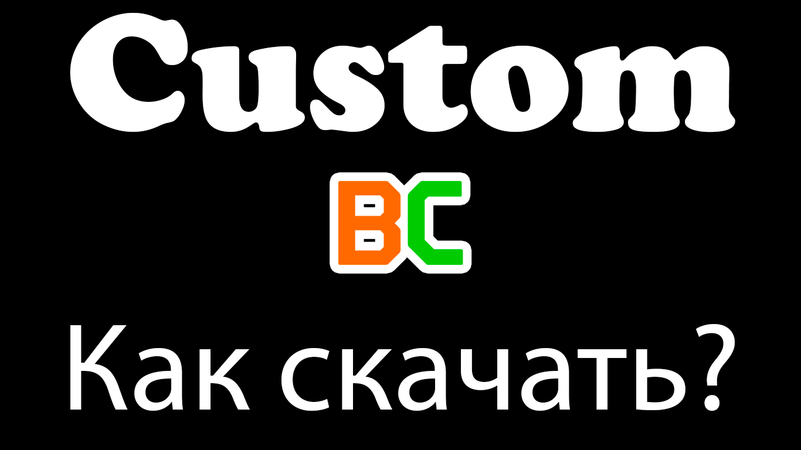
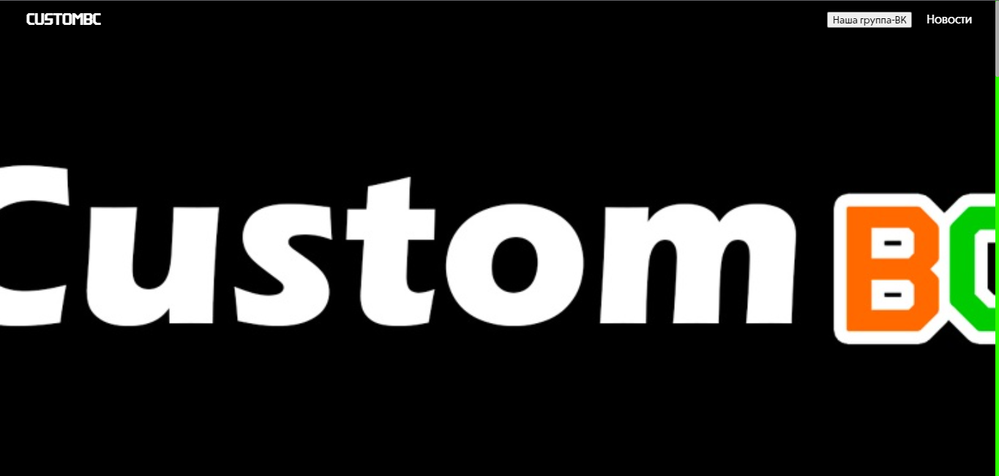
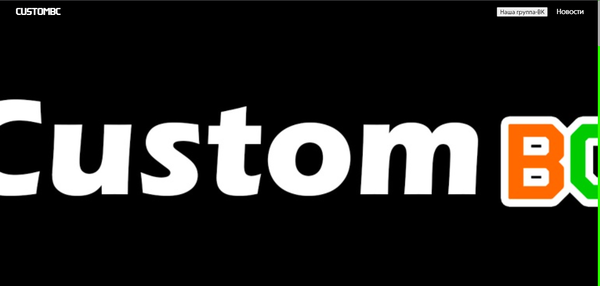
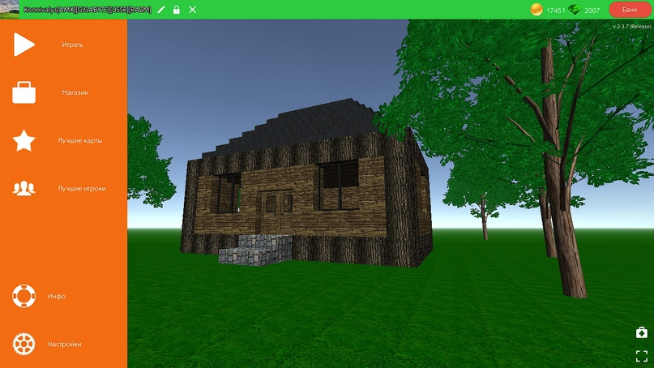

Новости
18.07.2023
Изменён баннер CustomBC. Карта: Город Avriko. Автор: MrBodya.
Изменён баннер CustomBC. Карта: Город Avriko. Автор: MrBodya.
16.07.2023
Был значительно обновлён сайт. Теперь все вещи будут отображаться в соответствии с разделом, доработаны иконки. Дизайн ещё пока не поменялся.
Был значительно обновлён сайт. Теперь все вещи будут отображаться в соответствии с разделом, доработаны иконки. Дизайн ещё пока не поменялся.
СustomBC 1.0 Release (15.07.2023)

Интерфейс
Изменён графический интерфейс в меню-сцене и игровой сцене
Интерфейс
Профиль игрока в зелёной панели теперь находится снизу
Интерфейс
Увеличены размеры окон: "Карты", "Лучшие карты" и "Лучшие игроки"
Интерфейс
Изменены иконки объектов в инвентаре
Интерфейс
Доработаны некоторые разделы
Блоки
Изменён блок текстуры: "Песок"
Блоки
Изменён блок текстуры: "Пыльная дорога"
Блоки
Изменён блок текстуры: "Шерстяной ковёр"
Удаление
Убран магазин, предметы в игре теперь бесплатные
Удаление
Удалены: Раздел "BugReport" и WepAPI "BugsReport"
Удаление
Убрана валюта из игры
Удаление
Убран банк
Техническая часть
Изменена конфигурация "ForgeBuildSettings". Теперь это уже другой билд игры
Техническая часть
Теперь игра будет требовать потверждение, прежде чем выйти из игры.
Улучшение
Улучшение раздела "Информация о моде"
Улучшение
Теперь в разделе "Инфо" говорится про Buildercraft, а в разделе "О модификациии" про CustomBC
Fix
Исправлено текстовое поле в окне смены ника
Fix
Различные исправления
Онлайн
В чат выводятся сообщения когда вы разрешаете или запрещаете строить игрокам
Разное
Цвет сообщений сервера заменён на бирюзовый
Разное
Изменён некоторый игровой текст
Разное
Прочие изменения
Как скачать мод?

Шаг 1
Зайдите на наш сайт и вверху страницы будет 3 ссылки для скачивания, выберите вами удобный способ скачивания и приступайте
Шаг 2
После скачивания, откройте установщик
Внимание!
Если вас остановил антивирус, просто игнорируйте его и загружайте мод дальше
Шаг 3
Когда зайдёте в установщик, согласитесь со всеми условиями, выберите место расположения куда вы загрузите ваш мод, создавать ли ярлык на рабочем столе и т.д
Завершение
Когда вы всё сделали, можно начинать играть
12.07.2023
Наконец-то был обновлён сайт мода CustomBC. Дизайн и т.п мало чем может порадовать, зато вы сможете по подробнее узнавать об обновлениях, удобнее скачивать. Сайт будет со временем улучшаться и приобретать свои новые краски. 
Наконец-то был обновлён сайт мода CustomBC. Дизайн и т.п мало чем может порадовать, зато вы сможете по подробнее узнавать об обновлениях, удобнее скачивать. Сайт будет со временем улучшаться и приобретать свои новые краски. 
СustomBC 0.3 Beta (07.07.2023)

Блоки
Изменён блок текстуры: "Камень"
Техническая часть
Добавлена новая поверхность "Асфальт"
Fix (Mod)
Исправлен баг который при сохранения или выходе с карты, игрока выбрасывало на рабочий стол
Fix
Исправлен баг который позволял вылетать игроку за карту при включённом полёте
Разное
Прочие изменения
CustomBC 0.2 Beta (06.07.2023)

Интерфейс
Обновлён игровой интерфейс в меню паузы и меню создания мира
Удаление
Убрана статистика из меню паузы
Улучшение
Полёт и бег отсоединены от магазина, соответственно они теперь бесплатны. Пока что только полёт и бег!
Улучшение
Добавлена кнопка в главном меню и меню паузы "Выйти из игры"
Улучшение
Текст в табличках увеличен до 200 символов
Звуки
Изменён звук лестницы
Звуки
Изменена 3 окружающая музыка на "Rubix_Cube"
Разное
Прочие изменения
Fix
Устранён баг "Захват" который позволял выгонять игроков, при этом находясь на чужой карте
(06.07.2021) В связи с жёстким багом мультиплеера. Версия CustomBC 0.1.1 Beta закрывается и была удалена! Постараюсь за место этого как можно быстрее выкатить новую 0.2 Beta

CustomBC 0.1 Beta (17.06.2023)
Интерфейс
Обновлён игровой интерфейс в главном меню и меню создания мира
Блоки
Изменена текстура блока "Лава"
Улучшение
Изменены картинки
Звуки
Изменен звук визга шин
Звуки
Изменен звук подъема по лестнице
Звуки
Изменены звуки взаимодействия с водой
Звуки
Изменены звуки активации и подрыва бомб
Звуки
Изменена вся музыка в главном меню и музыка во время игры
Онлайн
Уменьшен лимит количества игроков на одной карте до 20
Разное
Прочие изменения

17.06.2023
В разработке

BuilderCraft 2.3.7 Mod by: Konnivalys 3.0 (13.03.2023)
Блоки
Новый блок: "Блок без текстуры"
Техническая часть
Увеличено количество сидов (от -1000000000 до 1000000000)
Техническая часть
Новые размеры создания мира (32x32, 1024x1024)
Улучшение
Теперь вместо отчётах о багах будут списки нововведений
Улучшение
Теперь можно делать названия карт до 100 символов
Fix (Mod)
Исправлен ползунок лимита игроков
Онлайн
Теперь можно создавать карты до 250 игроков
Разное
Изменён игровой текст
Разное
Прочие изменения
BuilderCraft 2.3.7 Mod by: Konnivalys 2.0 (14.01.2023)
Интерфейс
Изменён инвентарь
Техническая часть
Новый тип ландшафта: "Открытое море"
Предметы
Добавлены оружия
Улучшение
Теперь быстрый бег увеличивает скорость в 5 раз
Онлайн
Создание карт больше 10 игроков (Макс. 200)
Разное
Изменён иконка редактора с шестерёнки на карандаш
Разное
Изменён игровой текст
Разное
Прочие изменения
BuilderCraft 2.3.7 Mod by: Konnivalys(20.12.2022)

Удаление
Убрано ограничение на выделение блоков в редакторе
Улучшение
Можно выставлять больше 60 FPS до 540 FPS
Улучшение
Увеличен радиус взаимодействиями блоками вокруг себя до 50 блоков
Улучшение
В табличке теперь можно писать до 100 символов
Улучшение
В нике можно писать до 100 символов
Fix
Исправлена орфографические ошибки такие как: "Слекло"
Разное
Изменён некоторый игровой текст
Разное
Анти кика, обход запрет на строительство, запрет на читы (Полёт и бег) и запрет на бомбы там нет! Так что не радуйтесь особо